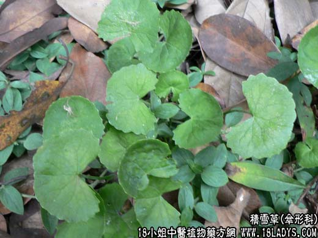

【中药概述】
积雪草为伞形科葡匐草本植物积雪草的全草。苦，辛寒。归肝、脾、肾经。
1．活血消肿：用于跌打损伤，瘀肿作痛等。
2．清热解毒：用于湿热黄疸，热疖疔毒，丹毒，风火赤眼，感冒，中暑，咽喉肿痛，痢疾，毒蛇咬伤，带状疱疹等症。
3．利水渗湿：用于热淋涩痛，尿频不畅，血淋，湿热黄疸，湿疹等症。
【临证应用】
治溃疡。取积雪草50g，水煎服，分3次服用。以50～60天为一疗程；用于痈疮肿毒，扁桃体炎，咽喉炎，泌尿系统感染及结石，肠炎痢疾。
【药理作用】
对皮肤组织的作用。如顽固性创伤、皮肤结核、麻风等；抗菌作用。
【化学成分】
含积雪草甙、参枯尼甙、异参枯尼甙、羟基积雪草甙、玻热模甙等。
【用量用法】
5——12g，水煎服。或捣汁。外用适量。